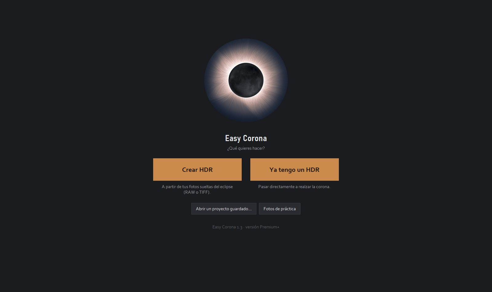
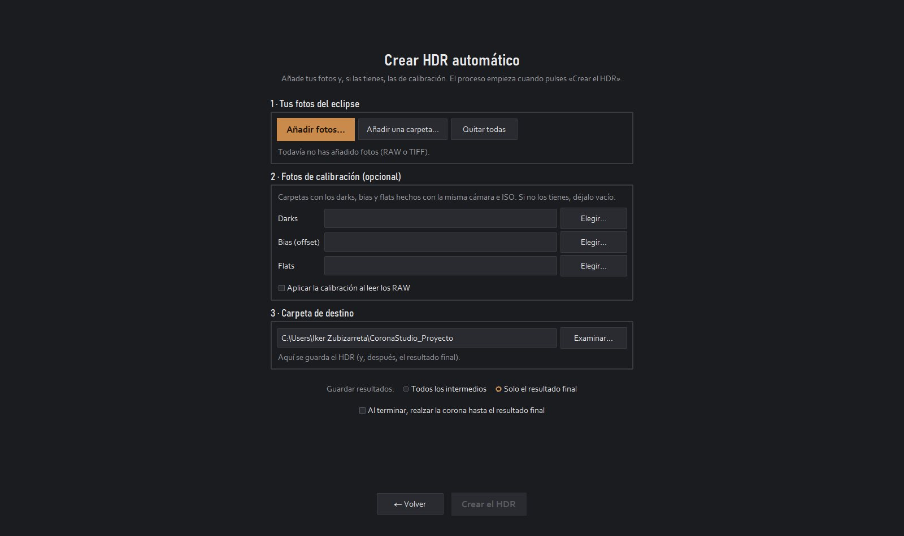
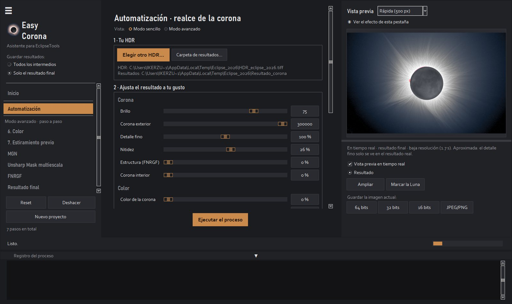
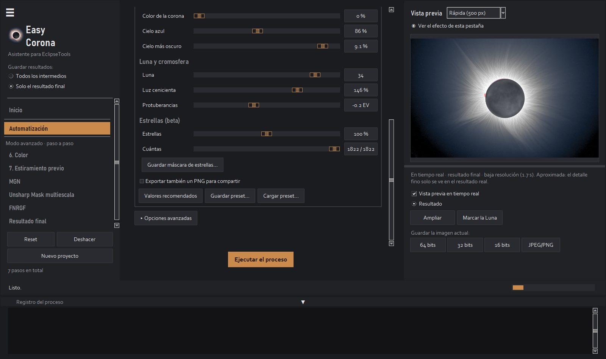
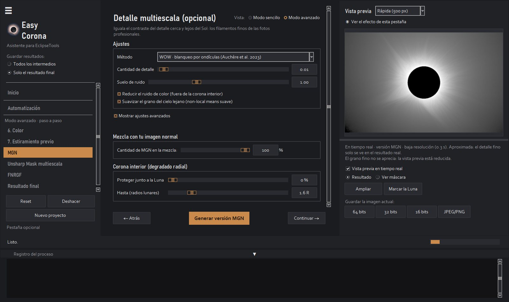
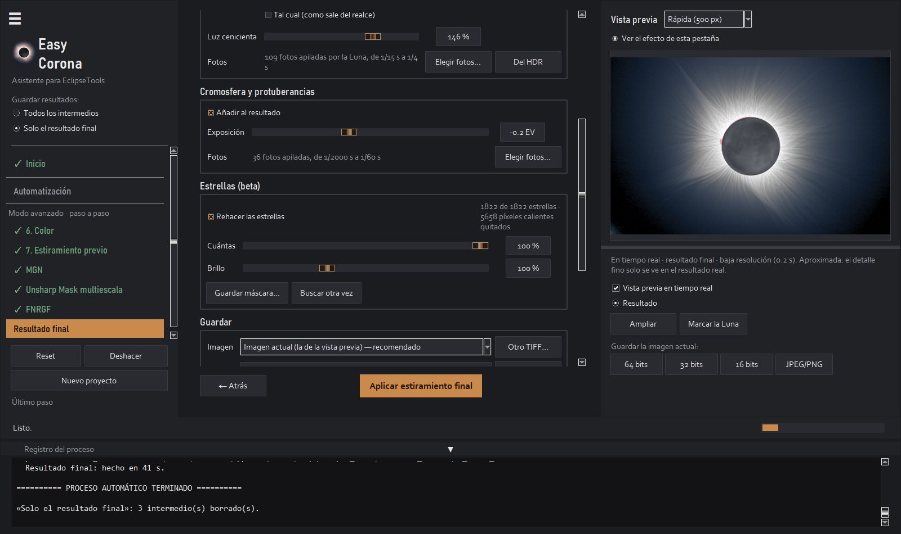
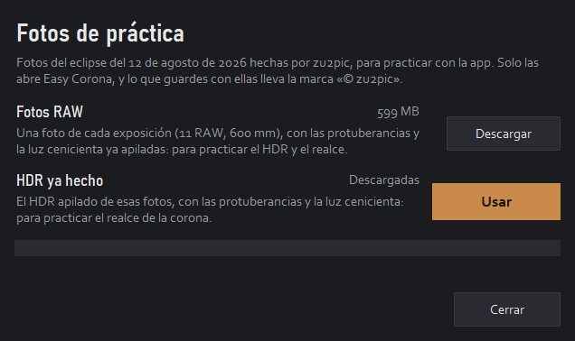

Tutorial
Easy Corona, paso a paso
Todo lo que hace la app, de la carpeta de fotos al resultado final. Si tienes prisa: Crear HDR → Crear HDR automático, añade tus fotos y pulsa Crear el HDR. Lo demás sirve para afinar.
1
Antes de empezar
Las fotos. La serie de exposiciones de la totalidad, en RAW (Canon, Nikon, Sony, Fujifilm, Panasonic, Olympus, Pentax, DNG) o en TIFF. Cuantas más exposiciones distintas, más corona: las cortas guardan las protuberancias y el borde de la Luna, y las largas las serpentinas lejanas y la luz cenicienta. Varias fotos de cada exposición reducen el ruido.
Opcional: darks, bias (offset) y flats para la calibración. Para la cromosfera y la luz cenicienta valen las mismas fotos de la serie.
Instalar. En Windows, el instalador. En Mac, abre el .dmg y arrastra Easy Corona a Aplicaciones; la primera vez, Ajustes del Sistema → Privacidad y seguridad → Abrir igualmente.
Idioma y letra. La app se abre en el idioma de tu ordenador (español o inglés). Se cambia en Ver → Idioma · Language, y el tamaño de la letra en Ver → Tamaño del texto; los dos se aplican al volver a abrirla.
Versiones. La gratuita lo hace todo, a 1200 px y con marca de agua, para que veas tu corona. Premium guarda a tamaño completo con el modo sencillo. Premium+ añade el modo avanzado y los presets.
2
Inicio
- Crear HDR: a partir de tus fotos sueltas.
- Ya tengo un HDR: si ya lo apilaste (con Easy Corona o con otro programa), pasas directo a realzar la corona.
- Abrir un proyecto guardado… y, debajo, los recientes.
- Fotos de práctica: un eclipse de verdad para aprender antes de usar las tuyas (ver el apartado 10).

3
Crear el HDR en un clic
En Crear HDR → Crear HDR automático:
- Tus fotos del eclipse: Añadir fotos… o Añadir una carpeta… (suman, de varias carpetas). La app lee la exposición de cada foto y las agrupa. Las subcarpetas Dark, Bias u Offset y Flat se reconocen como calibración, y «Cromosfera» y «Cenicienta» como fotos de esas capas.
- Fotos de calibración (opcional): las carpetas de darks, bias y flats, y la casilla para aplicarlas al leer los RAW.
- Luna y cromosfera: con las mismas fotos, qué exposiciones se usan para la cromosfera (las más rápidas) y para la luz cenicienta (las más largas). La app propone una elección mirando una foto de cada exposición.
- Carpeta de destino: donde se guardan el HDR y el resultado final.
- Guardar resultados: Solo el resultado final (los pasos intermedios van a una carpeta interna y se borran) o Todos los intermedios.
- Con Al terminar, realzar la corona hasta el resultado final, la app sigue sola hasta la imagen final.
Pulsa Crear el HDR. Según cuántas fotos haya, tarda de unos minutos a una hora: la barra de abajo y el título de la ventana dicen el paso y el porcentaje, y se puede cancelar.
Dos focales beta: si mezclas fotos de dos objetivos (por ejemplo, 600 y 300 mm), la app hace un HDR de cada focal y los une: el detalle del largo dentro del campo del corto.

4
Crear el HDR paso a paso
En el modo avanzado (Premium+), cada paso tiene su pestaña en la barra lateral, con sus opciones y su revisión:
- Imágenes: las fotos y sus grupos de exposición (por ISO, velocidad y diafragma, o por carpetas). Calibración de los RAW (opcional): darks, bias y flats.
- Alineación: cada foto de un grupo con la Luna o con la corona. Afinar y comprobar la alineación corrige lo que se movió y aparta lo que no encaja (a «_descartadas»). Después, una revisión con la «Diferencia» de cada foto, para quitar la que quieras.
- Promedio por exposición: las fotos de cada exposición en una, con menos ruido y con una sola Luna nítida (sin fantasmas en el borde).
- Alinear exposiciones: las exposiciones entre sí, de la más corta a la más larga.
- Apilado HDR: todo en un HDR de 32 bits, sin lo saturado de cada foto y con los bordes recortados.
5
Realzar la corona: el modo sencillo
En Automatización, con el HDR elegido, cada deslizador se ve al momento en la vista previa. Deja el ratón encima de cualquiera para ver qué hace.
- Brillo: el de la corona a 1,3-1,5 radios lunares, en L* (0-100).
- Corona exterior: cuánto se estira la imagen antes del realce. Más = más corona lejana (y más ruido en el cielo).
- Detalle fino: los filamentos finos de toda la corona (filtros MGN o WOW). 0 = sin ellos.
- Nitidez: la fuerza de los pases de realce, lo más fino. Si a tamaño real salen «escamas», bájala.
- Estructura (FNRGF): rayos con el mismo contraste de dentro a fuera.
- Corona interior: protege la corona junto a la Luna de los filtros (si ahí sale quemado o con puntos oscuros).
- Color de la corona: el color real de tu RAW (hace falta un RAW de la sesión junto al HDR); 0 = corona blanca. Cielo azul: el azul de las fotos de eclipse. Cielo más oscuro: el punto negro.
- Luna: el gris del disco («tal cual» = como sale del realce). Luz cenicienta: los mares de la Luna. Protuberancias: la exposición de la cromosfera.
- Estrellas beta: al moverlo, la app busca las estrellas en el HDR, las quita del resultado con el anillo oscuro que les dejan los filtros (y también los píxeles calientes) y las vuelve a poner limpias con ese brillo. Cuántas: de las más brillantes a las más débiles. Guardar máscara de estrellas… guarda su máscara para otros programas.
Ejecutar el proceso hace todo el realce y guarda el resultado. Si después solo cambias algo del resultado final (brillo, cielo, Luna, cromosfera o estrellas), se rehace solo ese paso, en segundos. Valores recomendados vuelve a los de partida.


6
La vista previa
- Calidad: de Rápida (500 px) a Máxima (2200 px). Lo que ves se calcula con las mismas funciones que el resultado; en pequeño, el detalle más fino es aproximado.
- Ver el efecto de esta pestaña: apágalo para comparar con la imagen de antes. Ver máscara: solo lo que añade el filtro.
- Ampliar: la imagen a tamaño real, con zoom. Ahí se juzgan el detalle fino y las estrellas.
- Marcar la Luna: si la app no encuentra bien la Luna (Luna quemada, fotos raras), arrastra un círculo sobre ella.
- Guardar la imagen actual: en 64, 32 o 16 bits, o en JPEG/PNG.
7
El modo avanzado
Con Modo avanzado (Premium+), cada filtro tiene su pestaña. En cada una, el botón de abajo aplica el filtro y la imagen que sale pasa a ser la actual; Deshacer vuelve atrás y Proyecto → Restablecer solo esta pestaña pone sus valores de partida.
- 6. Color: corona neutra o el color real de tu RAW.
- 7. Estiramiento previo: cuánto se estira la imagen y el degradado del cielo que se resta.
- MGN: el detalle multiescala (MGN, WOW o NAFE), su cantidad, el suelo de ruido, el ruido de color y el grano del cielo lejano; la mezcla con tu imagen y la corona interior.
- Unsharp Mask multiescala: los pases de realce, cada uno con su radio radial y tangencial y su cantidad.
- FNRGF: la normalización por radios (NRGF o RHEF), con su contraste y su color.
- Resultado final: el siguiente apartado.

8
Resultado final: Luna, cromosfera y estrellas
- Brillo: automático (el L* que quieras en la corona) o una cantidad a mano.
- Color del cielo: el azul y su tono.
- Luna: su gris o «tal cual»; la luz cenicienta y de dónde sale: tus fotos largas (Elegir fotos…, de cualquier carpeta) o el propio HDR (Del HDR, solo si de verdad se ven los mares).
- Cromosfera y protuberancias: las fotos rápidas se apilan aparte, borrando la Luna de cada una, y se añaden al final, nítidas y con una sola Luna. Exposición las hace más claras u oscuras.
- Estrellas beta: Rehacer las estrellas, Cuántas, Brillo, Guardar máscara… (un TIFF de 16 bits del tamaño del resultado; blanco = estrella con su halo) y Buscar otra vez. Los píxeles calientes que quedaron en el apilado (puntos rojos o azules) se quitan también.
- Guardar: la imagen de entrada, la carpeta y el nombre; Exportar PNG/JPEG para compartir.

9
Archivos, proyectos y presets
- 06_final_16bit.tiff: el que se abre en Photoshop, Lightroom, Affinity o GIMP (con perfil sRGB). 06_final.tiff es el de 64 bits de la app; con «Todos los intermedios» se guarda también una copia lineal de 32 bits.
- Proyectos: Proyecto → Guardar proyecto… guarda todos los ajustes y qué archivos usa; Abrir proyecto… lo recupera (también desde Inicio, en los recientes).
- Presets (Premium+): Presets → Guardar preset… guarda tus ajustes del realce en un archivo .json que puedes compartir; Abrir preset desde un archivo… y Gestionar presets….
- Reset vuelve todo al HDR inicial; Nuevo proyecto empieza de cero; Proyecto → Liberar espacio de trabajo… borra las carpetas internas viejas.
10
Fotos de práctica, idioma y licencia
- Fotos de práctica (Inicio o Ayuda → Fotos de práctica…): las fotos RAW del eclipse del 12 de agosto de 2026 de zu2pic o su HDR ya hecho. Solo Easy Corona las abre, y lo que guardes con ellas lleva la marca «© zu2pic».
- Avisos de versiones nuevas: con la versión gratuita, Ayuda → Avisos de versiones nuevas… te apunta (o te da de baja) para recibir un correo cuando salga una versión.
- Licencia: al comprar recibes la clave por correo; pégala en Licencia → Activar licencia…. Sin conexión a internet: la clave se comprueba en tu ordenador.

11
Consejos
- Juzga siempre el resultado a tamaño real (Ampliar): si salen «escamas» o grano, baja Nitidez o Detalle fino.
- Si junto a la Luna sale quemado o con puntos oscuros, sube Corona interior.
- Si la Luna sale mal colocada o con un anillo, usa Marcar la Luna.
- Para retocar en otro programa, usa el TIFF de 16 bits: el de 32 bits es lineal y muchos programas lo tratan como HDR.
- Las estrellas son una función en pruebas beta: revísalas a tamaño real y, si alguna no te convence, baja Cuántas.
- ¿Dudas o un fallo? Escribe a zu3run@gmail.com con el archivo «registro.txt» de la carpeta EasyCorona de tu usuario.